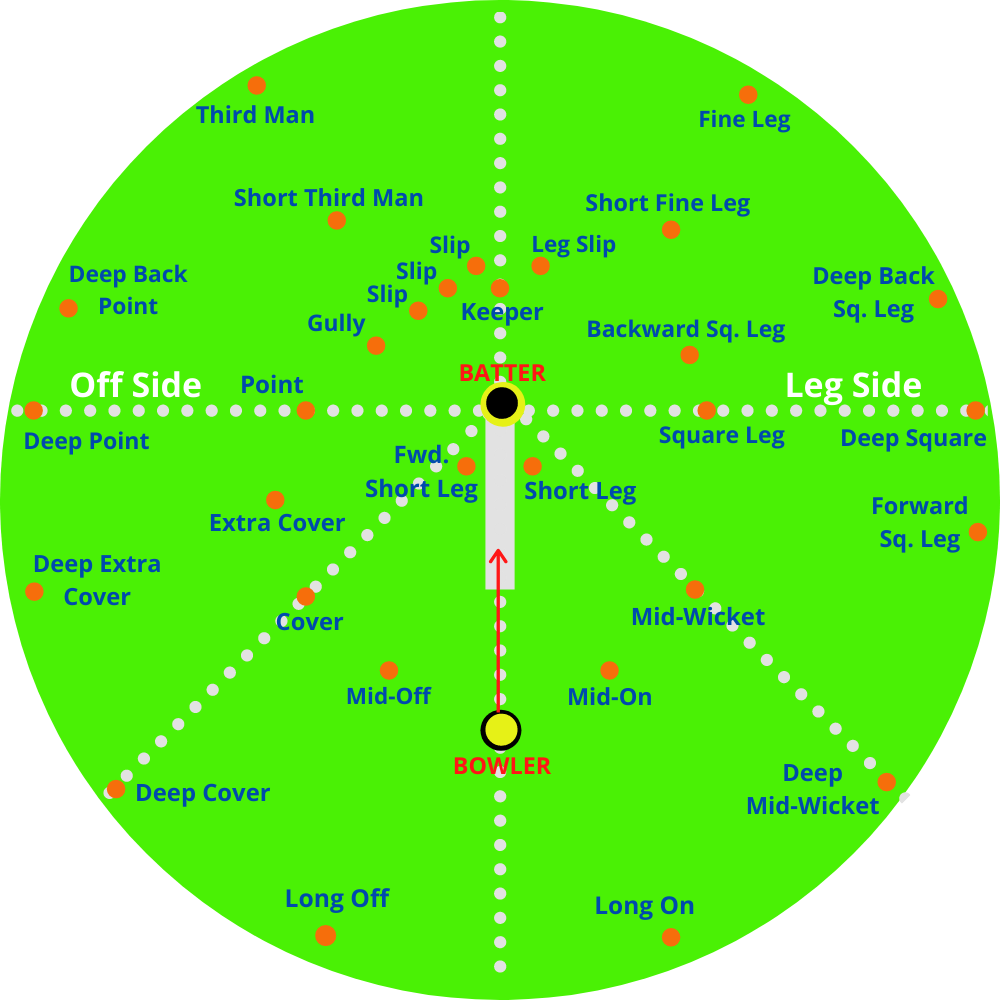
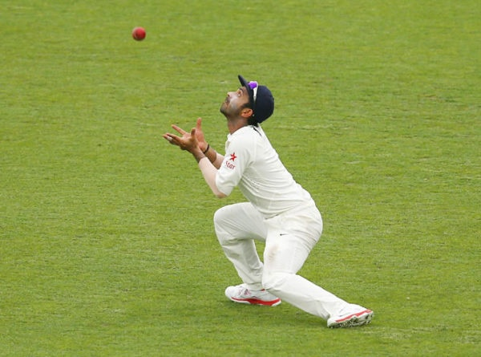

Fielding can really make a difference for a side during a cricket match. It can save several runs, get batsmen out, and overall put more pressure on the other side. Here's a picture of the common fielding positions.
 As you can see, there's a variety of them. Different positions are meant for different things - the ones farther out are to prevent the boundary from happening, which is when the ball touches the edge of the field and the batting team gets 4 runs. The ones closer in are meant to stop the ball when it doesn't travel much, and get it back to the wicketkeeper (who stands behind the batsmen) for a possible run out. The ones closer in are usually the sharper fielders, as they have the reflexes to catch the ball in case there is an opportunity.
Here are some great catches throughout the history of cricket to showcase some great fielding performances.